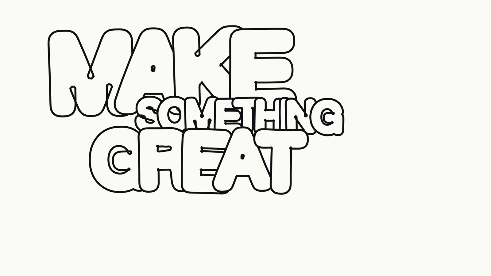

Bubble Writer
Type a phrase and it is written into the frame a letter at a time. Ink dots gather at a letter's centre, the letter inflates around them, and on the way out it deflates and scatters the same dots again.
Open the instrumentOpen
The letterform is an operation
Not a typeface. A thin glyph is pushed out to a true offset curve by an exact signed distance transform, contoured by marching squares, then relaxed under surface tension and internal pressure until the stems bow — which is what the form is named after.
Dilation does the counters
Nothing is drawn twice. Counters collapse to almond slits and swallowed crossbars survive as tick marks because that is what a dilated letter looks like, not because anyone added them.
The dots are ink
They never use opacity. A mark on paper exists or it does not, so they shrink and they move — and they only belong to the animations that earn them.
Yours to take
Five entrances, four exits, five styles, colour and gradient, four frame ratios, and a randomizer that rolls everything except the phrase. Export the frame as PNG, or take the seed prompt and rebuild the whole thing in your own agent.
A credited study of Tracy Ma's bubble-letter animation Do You Remember The First Time?, made for the Blonded team in 2019, with placement behaviour recovered from the published source of The New York Times' Gen X Is A Mess (2019, draw-on by Aliza Aufrichtig). Their letters are drawn by hand; these are generated. No artwork or source of theirs is used or redistributed here.